No tutorial 1 você pôs objetos na tela. No 2 você fez eles andarem. Este é sobre a terceira pergunta: e se eu quiser dobrar, torcer, espelhar ou inclinar o que já está lá?
São treze nós, e todos fazem a mesma coisa em espírito: recebem uma folha de objetos e devolvem a mesma folha noutro sítio. O que muda entre eles é a forma de mexer.
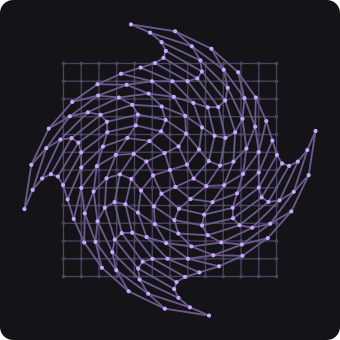
Twist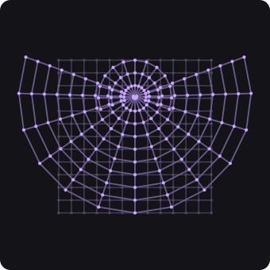
Bend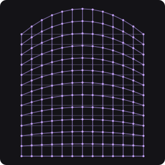
Bezier WarpCole isto inteiro num terminal. Na primeira vez ele compila (alguns minutos); depois abre em segundos.
Abre uma tela escura com um pano de pontinhos à direita do centro, sendo atirado à volta de um ponto onde não há nada. A etiqueta «a origem do mundo» marca esse ponto.
Se a tela ficar vazia, ou se o pano já estiver a torcer-se calmamente sobre si
mesmo, você está numa cena errada: confira que copiou PH2D_GPU_COOK_DEMO=111.
Torcer é sempre torcer em volta de alguma coisa. Dobrar é dobrar em volta de um vinco. Aumentar é aumentar a partir de um ponto. Essa coisa tem um nome no app: Pivot.
A cena que abriu está com o pivô no lugar errado de propósito — no centro do mundo, que fica fora do pano. É por isso que o pano é atirado em vez de torcido.
Pivot. Ela mostra uma palavra
(Point) entre duas setinhas, e não um número. Clique na palavra, no
meio da linha.
Centroid: o
pano passa a torcer-se sobre si próprio — sem você ter digitado coordenada
nenhuma.World Origin.
Centroid quando tiver visto.Pivot X e Pivot Y — serve quando o eixo é um lugar fixo da cena.
Centroid é o meio do que está a passar por ali, agora — serve quando você quer que
a coisa se torça sobre si mesma, e ela continua certa mesmo que você mova o pano depois.Esse mesmo controle, com essas mesmas três palavras, está no Twist, no Bend, no Kaleidoscope e no Transform. Aprendeu num, sabe nos quatro.
O cartão Transform é o canivete do grupo: ele faz num nó só o que o
Move, o Scale e o Rotate fazem separados — e mais uma
coisa que nenhum deles faz.
Skew X para a direita.
Skew Y.
Scale.
Pivot deste cartão está em
Centroid.Skew é a inclinação, não um ângulo.
1 é 45 graus: cada unidade que você sobe, a folha desliza uma unidade de
lado. 0 é o ponto neutro — a folha fica exatamente como estava.O Mirror é o único do grupo que devolve mais objetos do que recebeu: ele fica com a folha original e com o reflexo dela.
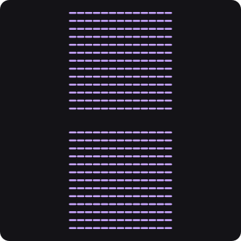
Mirror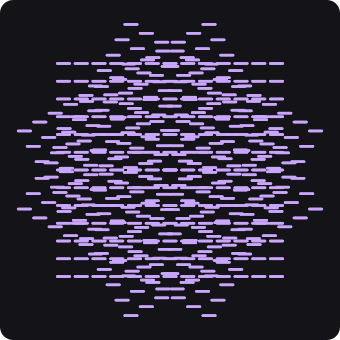
KaleidoscopeAxis Offset.
Axis e escolha a outra opção.
Flip Orientation (é um liga/desliga).
Doze mil e oitocentos pontinhos são bonitos e não deixam ver o que acontece com cada um. Diminua antes de estudar.
Rows do cartão Grid, digite
9 e aperte Enter. Faça o mesmo em Columns.
Gap X e Gap Y até o pano ocupar de novo o mesmo
espaço.Pivot, agora com poucos pontos.
Centroid o ponto do meio do
pano fica parado — é ele o eixo.Todos recebem uma folha e devolvem a folha mexida. A grelha cinzenta de cada figura é o que entrou.
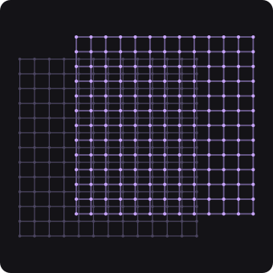
Move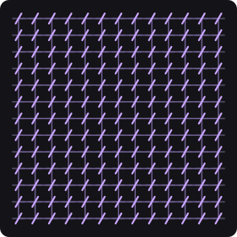
Rotate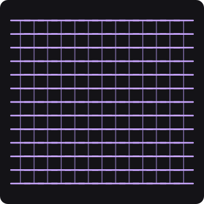
Scale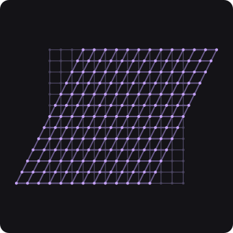
Transform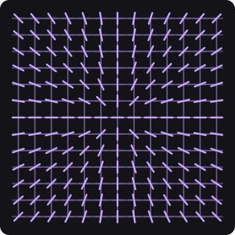
Look At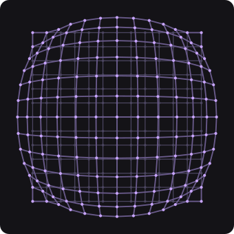
Spherize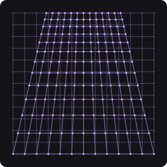
4-Point Warp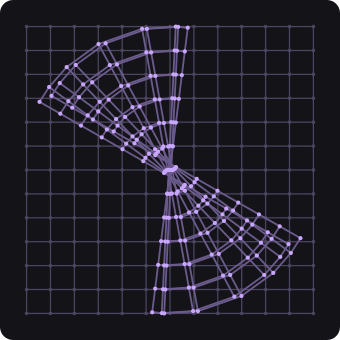
Spline WrapOs dois pegam a folha pelas bordas. A diferença é que o 4-Point Warp só tem os quatro cantos: as bordas dele ficam sempre retas. O Bezier Warp tem os cantos e duas alças por borda, então as bordas arqueiam — que é o que a figura dele mostra no topo. Se você quer uma bandeira, é o segundo.
A faixa é o que o arrasto alcança. Quando um controle aceita mais do que isso pela caixa de digitar, o teto está escrito ao lado.
Este app tem dois caminhos para cozinhar uma cena: a placa de vídeo, que faz milhões de objetos sem piscar, e o processador, que é o caminho de referência e é muito mais lento. Quem escolhe é o app, e a regra é simples: a fila inteira vai para a placa, ou nenhum vai. Um único nó que não saiba rodar lá derruba a cadeia toda.
Por isso a resposta que interessa não é «quantos milissegundos custa este nó», é quantos deles ficam na placa:
| nó | roda na placa? |
|---|---|
| Move · Rotate · Scale · Transform · Mirror · Bend · Twist · Spherize · 4-Point Warp · Bezier Warp · Kaleidoscope | sim, sempre |
| Look At | sim — enquanto o alvo vier por um fio. Digitar um
Target X tira-o de lá |
| Spline Wrap | não, nunca |
Bend da paleta (tecla
A) e ligue-o entre o Mirror e o Twist. Torça e dobre ao
mesmo tempo.Pivot que você já aprendeu.LFO na paleta, puxe um fio da saída
dele e largue-o em cima do corpo do cartão Twist — não num pino redondo, no meio do
cartão. Abre uma lista com os pinos e os controles dele: escolha
Pivot X.
Pivot X deixa de arrastar (o número passa a vir de
fora) e o eixo da torção passeia pelo pano.| o que você vê | o que é |
|---|---|
| A tela abre vazia | a cena errada — confira o =111 do comando |
| O pano já nasce torcido sobre si mesmo | o Pivot do Twist não está
em Point; a cena abre com o defeito de propósito |
Pivot X e Pivot Y somem do cartão | o
Pivot saiu de Point — eles só existem nesse modo, porque nos
outros dois ninguém os lê |
| Um controle que não arrasta | ou ele é uma escolha (uma palavra entre setinhas — clique nela), ou está sendo puxado por um fio: aí o número vem de fora |
| Uma linha com uma setinha | é uma seção dobrada: clique para abrir (o
Bezier Warp tem cinco: uma para os cantos e uma por borda) |
O Flip Orientation do Mirror não muda nada | os pontinhos desta cena são redondos; ele só se vê em objetos que têm um lado |
| A cena engasga com muitos objetos | o Spline Wrap é o único dos treze que
nunca roda na placa; com ele na cadeia, tudo volta para o processador. O Look At
roda — mas só enquanto o alvo dele vier por fio: digitar um
Target X tira o nó da placa também |